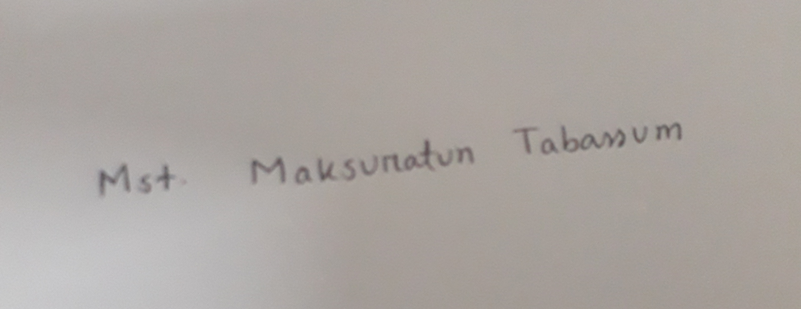

Curriculum Vitae
of
Mst. Maksuratun Tabassum
Address: House:95,Road:03,Block:C,Basundhara R/A,Dhaka
Contact:+8801796196482
Email:tabassumjuthika340@gmail.com
Position Wanted: Senior Software Engineer at SPM IT Center
Educational Background:
B.Sc in Computer Science And Engineering [CSE]
CGPA: 3.48 out of 4.00
Depertment of Computer Science & Engineering
Passing year: 2021
University: American International University of Bangladesh
Higher Secondary School Certificate (HSC)
GPA: 5.00
Group : Science
Passing Year: 2016
Collage: New Govt. Degree College,Rajshahi
SSC
GPA: 5.00
Group : Science
Passing Year: 2016
School: Thakurgaon Govt. Girls’ High School,Thakurgaon
Academic Research:
Did a final year Undergraduate thesis entitled with “Artificial Intelligence” under the supervision of Tasnim Rahman, Lecturer, American International University Bangladesh(AIUB). Thesis features are-
Eliminate dull and boring tasks
Data ingestion
Imitates human cognition
Facial recognition and Chatbots
Prepared a short thesis on “Data Mining and Networking” under the supervision of Tohedul Islam, Assistant Professor, American International University Bangladesh(AIUB)
Work Experience:
Worked as a service assistant at a renowned software company for one year where learned PhP, OOP, MVC, MySQL, JavaScript, code testing very well
Contributed on STARTECH company where learned self-management, client handling, adapting new technologies, work in a team and work individually
Worked in Titas Software and learned how to work with OOP JS, ode.js, express.js,ES6 and react.js
Technical Skills:
Oracle(Database management system)
Java Script(programming language)
Git (System Software)
Webpack( Package management tools)
Linux(Operating System)
Appium(Test Automation Software)
Computer Expertise:
C++
Microsoft Word
Internet browsing and Email correspondence
Java Script
Microsoft Powerpoint
C#
Certification:
Certified as a CISCO networking specialist at JENEVA IT Limited
Certified as a project management Specialist by Bangladesh Institute of Management(BIM)
Language Proficiency:
Very good at both in English and in Bengali language
Awards:
Third price in Prothom alo Mathematics Olimpiad held in 2011.
Participation:
Participated a workshop youth leadership and awareness entitled with “Green Bangladesh”
Participated online programming contest “codejam” organized by Google
Represented team AKASH of American International University Bangladesh at World’s university Robot Championship held in America
Training:
Completed a Short Course in ‘Human Resource Management’ conducted by Bangladesh Institute of Management(BIM)
Personal Details:
Fathers name:A.T.M. Khalid Hossain
Mothers name: Mst. Ziaun Nasha
Nationality : Bangladeshi
Date of Birth : 15 August,1999
Religion: Muslim
Email: tabassumjuthika340@gmail.com
Reference:
Mehedi Kayser Pabitra
Assistant Professor
American International university-Bangladesh
Contact No:01929567746
Email:mahedipabitra@aiub.edu
Sincerely :
Mst. Maksuratun Tabassum
Signature :
